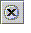

From the Javadoc Index Search window, you can search through Javadoc-generated documentation for information on a specific class or class member. Open the Javadoc Index Search window from the main window by choosing Help > Javadoc Index Search.
To search through the documentation, type your search string in the text field and click Find. The matches appear in the top pane of the Javadoc Index Search window. You can view and sort the matches using the toolbar controls in the window. The toolbar controls are described in the following table.
| Control | Description |
|---|---|
|
Views the source of the match in the Source Editor |
|
Sorts matches alphabetically |
|
Sorts matches alphabetically by package name |
|
Sorts matches alphabetically by entity (class, interface, method, constructor, or field) |
To view the documentation, click the match that interests you. The documentation appears in the web browser in the bottom pane of the Javadoc Index Search window. You can navigate the documentation using the controls in the web browser toolbar. The following table describes the controls.
| Control | Description |
|---|---|
| Returns to the previous page | |
| Goes to the page you browsed prior to clicking the Return button | |
|  | Stops loading the page |
| Reloads the current page | |
| Views a history of pages you have browsed |
Double-clicking a match opens the documentation in a separate web browser window.